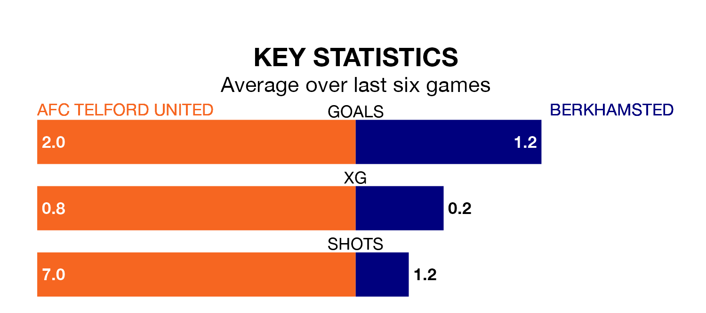

Relegation candidates Berkhamsted face a challenge away against high-flying AFC Telford United at the New Bucks Head Ground on Saturday.
Berkhamsted are 21st in the Southern League Premier – Central table, and have picked up just three wins and 12 draws in their 38 games to date.
The Bucks, meanwhile, are third in the standings with 71 points, having won 20 and drawn 11, and are 14 points behind table-toppers Needham Market.
With 29 goals in 38 games so far this season, Berkhamsted are the league's lowest scorers with 0.8 goals per game. And they are conceding more than average, letting in 77 goals at a rate of 2.0 per game.
Telford United, meanwhile, are above average scorers, with 1.6 goals per game, compared to a league average of 1.5. They have conceded 0.8 goals per game.
The Bucks are in good form in the Southern League Premier Central, with four wins and a draw from their last six games.
With a win and two draws over that period, the visitors' form is much worse – they have taken five points from 18, compared to the home side's 13.
Telford United's last match was on April 6, a 1-0 win against Leamington.
Berkhamsted drew 1-1 with Kettering Town last time out, also on April 6.
Updated: 11:20 (UTC), 09/04/24